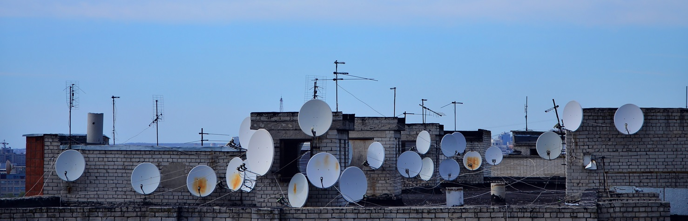
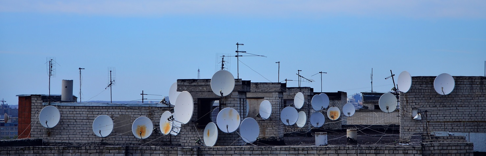
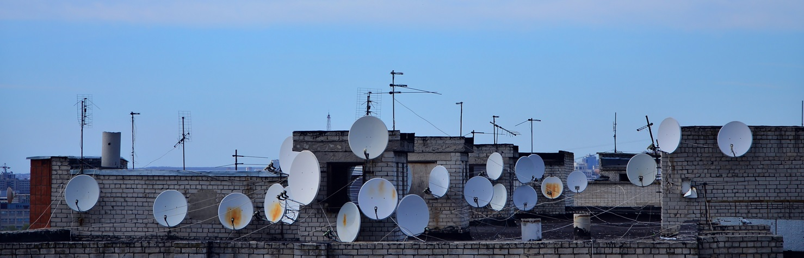
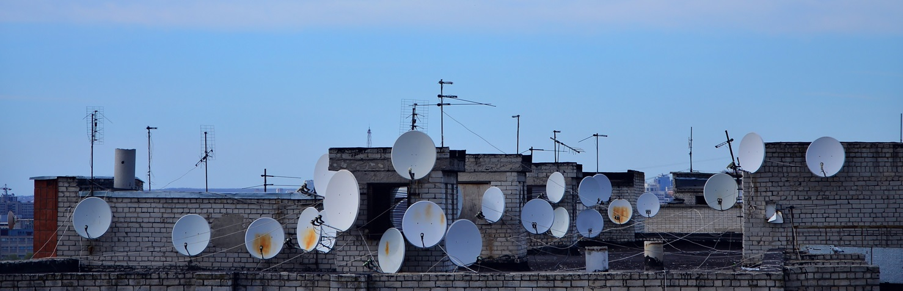

Direct-to-Home (DTH) service is a satellite broadcasting technology that delivers television content directly to households via satellite, eliminating the need for traditional cable networks.
This ensures high-quality, uninterrupted access to a wide range of entertainment, news, sports, and educational content.
Our fully managed DTH headend infrastructure provides an end-to-end solution for seamless content distribution across African markets.
From satellite uplink and downlink to encoding and multiplexing, our advanced system guarantees superior transmission quality and reliability.
Designed to support broadcasters, content providers, and satellite operators, our solution is backed by a state-of-the-art facility and a team of skilled engineers.
With our expertise, broadcasters can focus on delivering engaging content while we handle the technical complexities, providing a cost-effective, scalable, and high-performance media distribution platform.
West Africa Platform Services (WAPS) plays a crucial role in expanding access to high-quality television content across the region. Through our Direct-to-Home (DTH) broadcasting platform, powered by SES's satellite at 28.2° East, we provide seamless content distribution to over 5 million households in Ghana alone and over 11 million households in West and Central African countries. (Source: SES Satellite monitor survey)
Our extensive satellite footprint covers multiple West and Central African countries, ensuring reliable signal reception even in remote areas where terrestrial broadcasting is limited.
With our advanced infrastructure, broadcasters and content providers can reach vast audiences with crystal-clear transmissions, delivering diverse programming such as news, entertainment, sports, and educational content.
By enabling free-to-air (FTA) and free-to-view (FTV) channels, we enhance media accessibility and connectivity, bringing valuable content to homes, businesses, and institutions.
WAPS remains committed to innovation and excellence, continuously improving service reliability and quality while ensuring broadcasters can efficiently expand their reach.

Explore Our Solutions
Leveraging the prime orbital position at 28.2° E of a leading satellite operator and K-NET's state-of-the-art teleport facillities, WAPS delivers free-to-air (FTA) and free-to-view (FTV) channels to over 11 million homes across West and Central Africa.
Our robust satellite footprint ensures content accessibility—even in remote and underserved regions, making entertainment and information available to a diverse audience.
WAPS combines world-class satellite capacity with advanced teleport services to provide a seamless, reliable, and efficient broadcasting solution.
Our team of highly skilled engineers ensures smooth operations, including but not limited to content aggregation, Media Assets Management, DVB services and channel monitoring.
With over 10 years of delivering cutting-edge Direct-to-Home (DTH) broadcasting services, WAPS has built a strong reputation for innovation and excellence in the broadcast and media industry.
Our expertise ensures high-quality content delivery tailored to meet the evolving needs of broadcasters and audiences across West and Central Africa.
Partner with WAPS and take your content to a wider audience. Whether you're a broadcaster or content provider, our fully managed DTH solutions ensure seamless, high-quality content distribution across West and Central Africa.
With our expertise, cutting-edge technology, and wide reach, we make it easy for you to deliver entertainment, news, sports, and educational content to millions.
Let's make your content accessible together—get started with WAPS today!